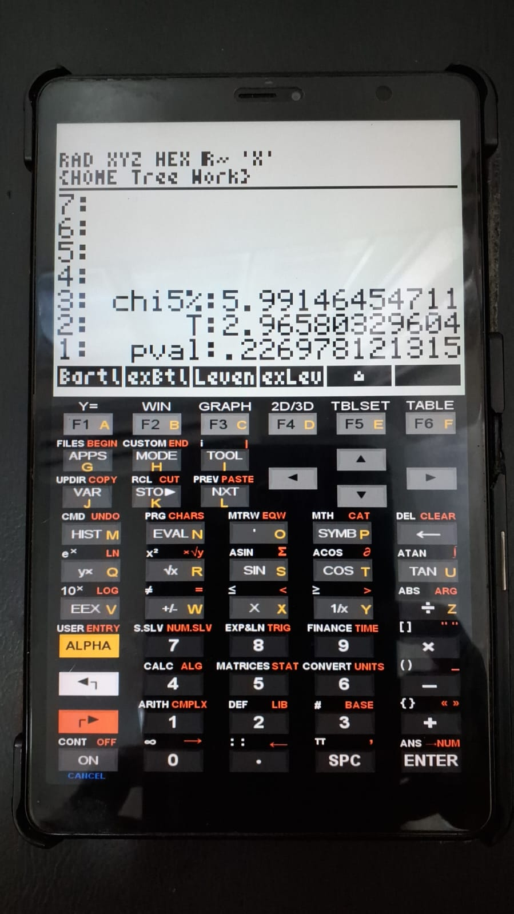

1. Entrar com matrix de dados (vetor coluna);
2. "Bart1matrix".Teste de homogeneidade de variâncias de Bartlett
O teste de Bartlett avalia se um conjunto de dados com k grupos possui variância homogênea entre seus elementos. A lógica do teste envolve o cálculo da estatística T e comparação com valor predito em teste de \(\chi\)\(^2\).
1 Equação:
\[
T = \frac{(N-k)*ln(s^2p)-\Sigma_{i=1}^k(N_i-1)*ln(si^2)}{1+\frac{1}{3(k-1)}(\Sigma_{i=1}^k\frac{1}{N_i-1})-\frac{1}{N-k}}
\] | Com: \[
s^2p=\Sigma_{i=1}^k(Ni-1)\frac{Si^2}{N-k}
\]
Onde:
Si² = variância do grupo;
Ni = tamanho do grupo ki;
N = total da amostra;
k = número de grupos;
s²p = variância agrupada
2 Arquivos:
3 Bart1matrix
O programa permite, a partir de uma simples matriz contendo os dados (vetores coluna), a saída de \(\chi\)\(^2\) crítico a 5% (\(\alpha\)=0.05), valor de T, e p-valor.
4 Uso e exemplo
O arquivo comprimido acompanha um exemplo que compara o peso seco de grupos de plantas controle juntamente a dois tratamentos. Os dados foram obtidos pela biblioteca
datasets do programa de estatística computacional R - PlantGrowth. As figuras na sequência ilustram o programa executado com o exemplo.

Comparando-se os dados obtidos com R, o p-valor foi de 0.2371 (k-square=2.966).
5 Referências:
- NIST. Engineering Statistics Handbook. Bartlett’s Test. Acesso em 9/fev/26.